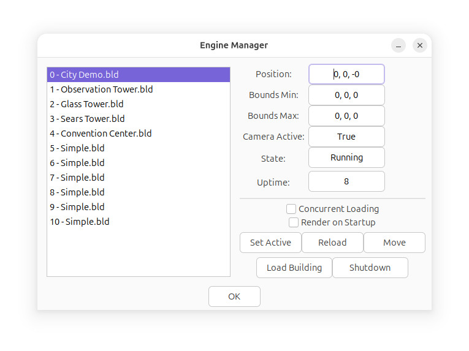

It is an evolution of the Engine Contexts feature, and this page explains how to use it.
There are two ways to interact with VM, using the Console, or the Engine Manager. First, we'll explain the Engine Manager.
The Engine Manager

On the left is a list of running simulator engines, each one is a building in the simulator.
On the right are the information fields about the selected simulator engine.
Position is the position in 3D space of the selected simulator.
Bounds refers to the position limits of the simulator instance.
Camera Active refers to if the user's camera is active in the selected simulator.
Uptime is the running time in seconds of the simulator instance.
If Concurrent Loading is checked, any loaded simulators will load in parallel.
If Render on Startup is true, the simulator engines will be drawn while loading.
The buttons below are used to control the related simulator:
Set Active sets the user's camera to be active in the selected simulator.
Reload reloads the selected simulator.
Move moves the selected simulator in 3D space.
Load Building loads a new building as a sim engine.
Shutdown shuts down the selected sim engine.
Clicking on Load brings up this dialog:
In the Load Building dialog, select the building to load. Then, enter the position that you want it placed at.
For the Bounds, leave at 0 if the building has bounds information inside it, otherwise set values to cut around the building.
The Bounds values I used in the example, are fairly standard and work for most regular buildings.
Options determines what to cut for the building, External and Floors are turned off by default to improve performance.
The Console

The Console window allows you to interact with both VM and the sim engine's script interpreter.
To see a list of commands, type help and press Send.
Commands will be first sent to VM, and if they don't match, will be sent to the related script processor.
As an example, to initialize and boot a new, empty simulator, type:
vminit
boot
The simulator will then launch with an empty sim engine.
To launch a simulator with an empty ground scene, type:
start